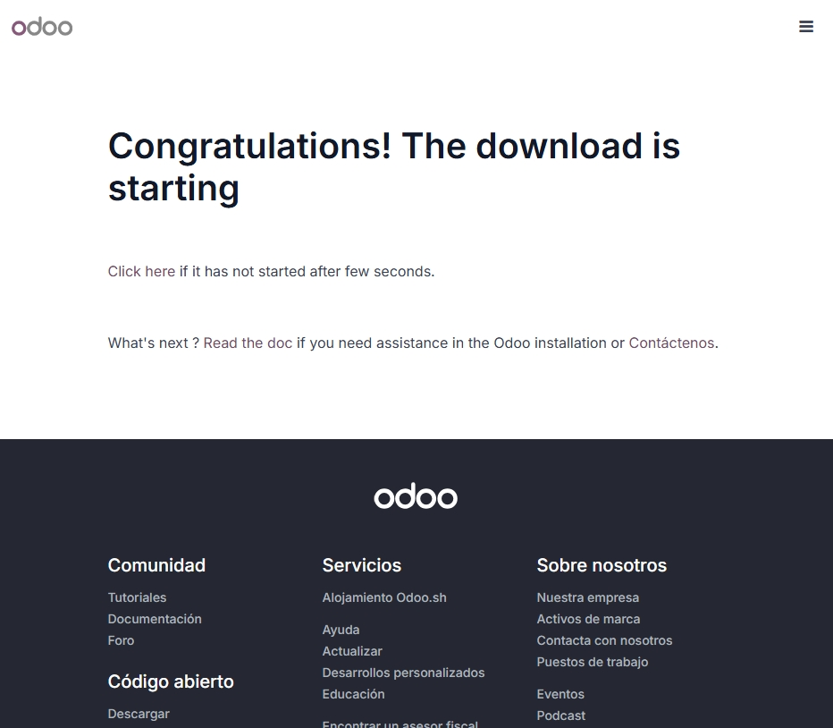
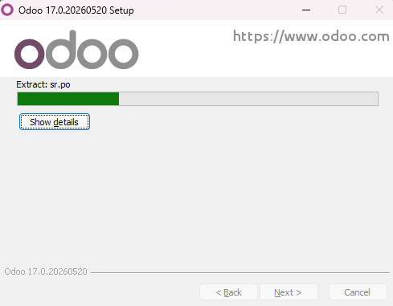
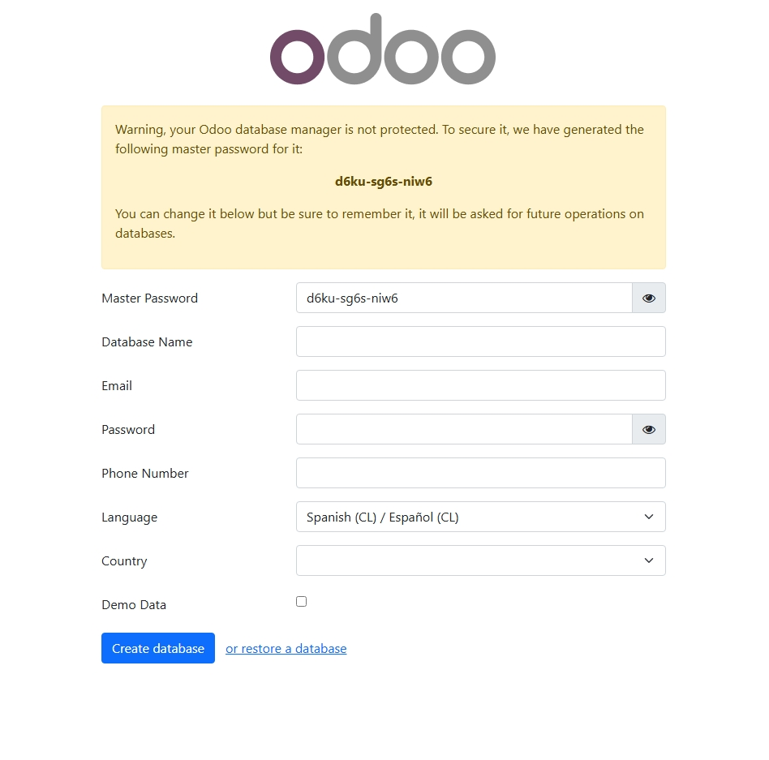
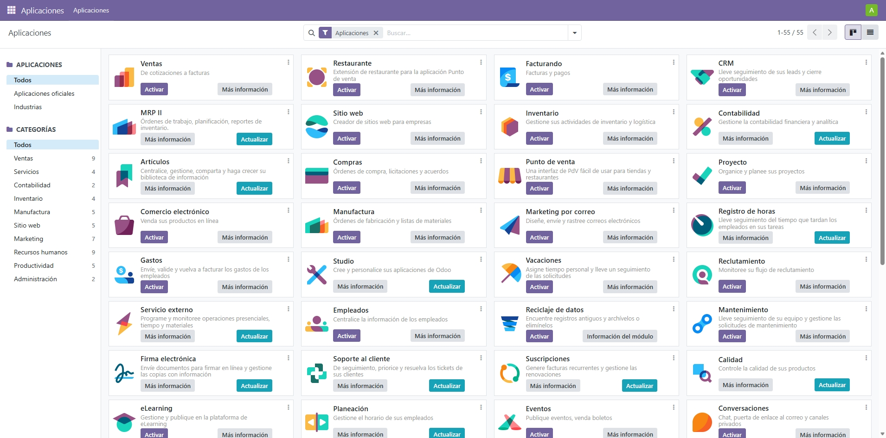

Odoo
Odoo es un sistema de gestión empresarial de código abierto que incluye una gran cantidad de módulos para gestionar ventas, compras, inventario, contabilidad, recursos humanos y mucho más. Es uno de los ERP más populares del mundo y tiene una versión gratuita llamada Odoo Community.
Nosotros vamos a instalar Odoo Community 17 en nuestro ordenador usando Windows. Para eso descargamos el instalador oficial desde la página web de Odoo.
Lo primero es ir a la página oficial de Odoo en www.odoo.com/es_ES/download y descargar la versión 17 Community para Windows. Es la versión gratuita y la más estable.

Página de descarga de Odoo donde elegimos la versión 17 Community para Windows
Una vez descargado el archivo .exe lo ejecutamos haciendo doble clic. Aparece el asistente de instalación de Odoo. Aceptamos el acuerdo de licencia y continuamos con los pasos del instalador.

Asistente de instalación de Odoo en Windows
El instalador se encarga de instalar todos los componentes necesarios, incluyendo PostgreSQL que es la base de datos que usa Odoo. El proceso tarda unos minutos.
Cuando termina aparece la pantalla final del instalador con el botón Finish. Hacemos clic en Finish y Odoo se abre automáticamente en el navegador.
Al abrir el navegador en localhost:8069 aparece la pantalla para crear la primera base de datos. Rellenamos el nombre de la base de datos, el email y la contraseña del administrador, seleccionamos el idioma español y hacemos clic en Create database.

Pantalla de creación de la base de datos inicial de Odoo
Después de crear la base de datos Odoo nos lleva al panel principal donde podemos ver todos los módulos disponibles para instalar. La instalación ha sido bastante sencilla gracias al instalador oficial para Windows.

Panel principal de Odoo con todos los módulos disponibles